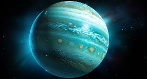
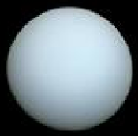

URANO
Urano é o sétimo planeta a partir do Sol, o terceiro maior e o quarto mais massivo dos oito planetas do Sistema Solar. Foi nomeado em homenagem ao deus grego do céu, Urano.
CARACTERÍSTICAS
Urano é o sétimo planeta a partir do Sol e o terceiro maior do Sistema Solar, depois de Júpiter e Saturno. Sua massa é, aproximadamente, 14 vezes a da Terra, e possui quatro vezes o seu tamanho. Assim como Netuno, recebe a alcunha de Gigante de Gelo em função da temperatura superficial média de -197 ºC (decorrente da sua distância do Sol) e de sua composição.
Urano é um planeta que não dispõe de uma superfície sólida como é a crosta terrestre. A atmosfera gasosa é seguida por líquidos dispostos em camadas, com exceção do núcleo, de aspecto rochoso.
A atmosfera do planeta é formada por hidrogênio, hélio e metano, sendo este o elemento responsável pela coloração verde-azulada observada nas imagens obtidas de telescópios. Encontram-se também quantidades muito pequenas de água e amônia na sua composição atmosférica, onde, nas camadas mais baixas (troposfera), há formação de nuvens. Os ventos atmosféricos em Urano atingem velocidade de até 900 km/h.
DADOS GERAIS DE MARTE
Área da superfície: 8.083.079.690 km²
Massa: 8,681 x 1025 kg
Densidade: 1,27 g/cm³
Diâmetro: 50.724 km
Gravidade:8,87 m/s²
Distância do Sol: 2.870.658.186 km.
Satélite natural: 27 luas conhecidas
Período de rotação: 17 horas e 14 minutos
Período de translação: 84 anos terrestres
Temperatura média: -197 ºC
Composição atmosférica: hidrogênio, hélio e metano
As luas de Urano
AUrano possui um total de 27 luas conhecidas. Embora não haja conhecimento acerca da composição de todas elas, sabe-se que aquelas mais próximas do planeta são formadas predominantemente por rocha e gelo. Cinco satélites se destacam: Titânia, Oberon, Umbriel, Miranda e Ariel.
"Titânia e Oberon são as maiores luas de Urano. Esta possui diâmetro de 1520 km e orbita a 584 mil km do planeta. É o satélite de Urano com o maior número de crateras em sua superfície. Titânia, por sua vez, tem diâmetro de 1578 km. Possui na sua formação água e dióxido de carbono congelados. Sua órbita fica a cerca de 788 mil km do planeta, a mais distante entre os satélites aqui destacados."
Curiosidades
- °Seu nome foi dado, em 1782, pelo astrônomo Johann Elert Bode. Urano, na mitologia grega, é o deus dos céus.
- °Desde a sua descoberta oficial, o planeta completou apenas duas voltas em torno do Sol. A terceira será em 2033.
- °Foi o primeiro cuja descoberta foi feia por um telescópio.
- °Rotaciona de lado devido à inclinação do seu eixo. Esse movimento se dá de leste para oeste.
- °A inspiração para os nomes das suas luas veio da literatura, mais especificamente de personagens criados por William Shakespeare e Alexander Pope.
- O movimento completo ao redor do Sol, chamado translação, realizado por Urano, dura incríveis 84 anos.
- A cor azulada característica do planeta é resultado da absorção de luz realizada pelo gás metano, presente na composição do planeta.
- Um dia em Urano tem duração de 17 horas terrestres, ou seja, o planeta leva 17 horas para girar em torno de si mesmo.
Material de Estudo